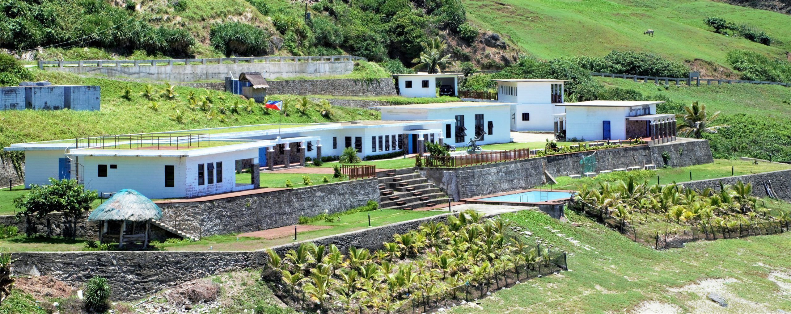
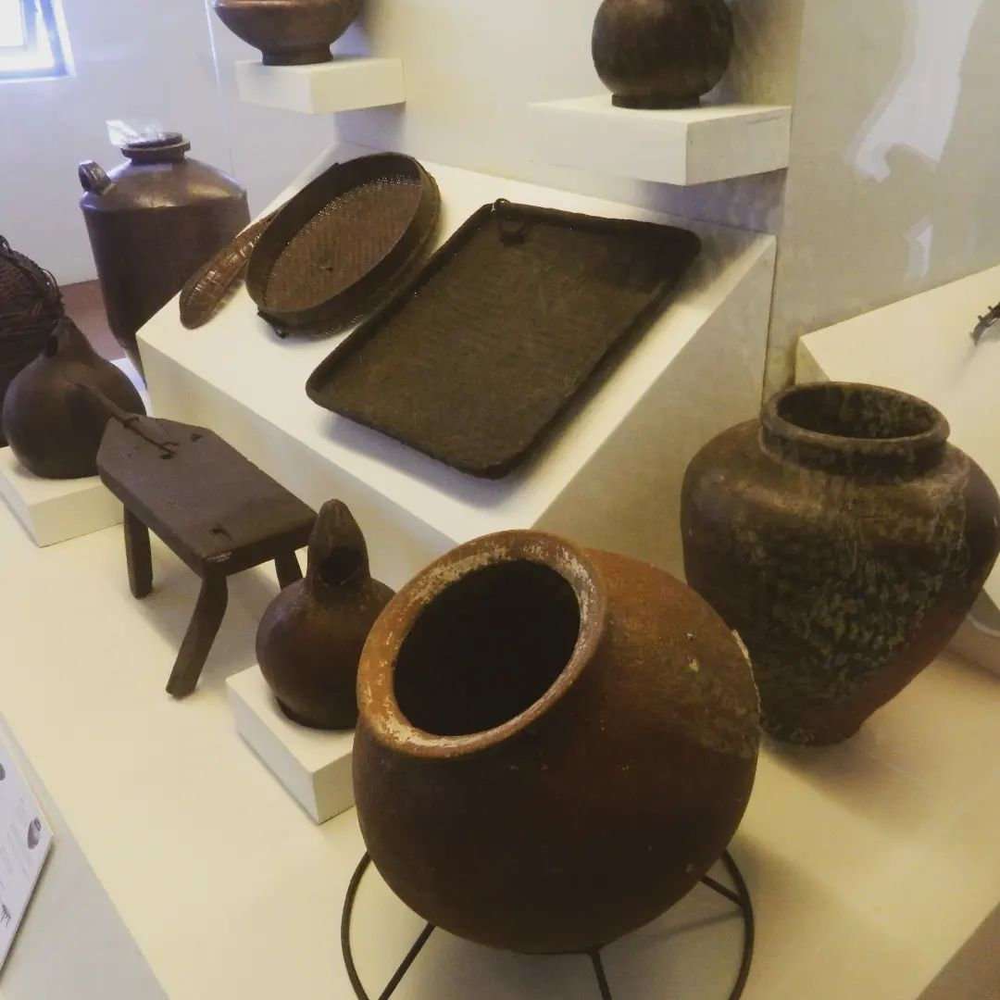

Cultural Preservation & UNESCO Recognition
The National Museum branch in Uyugan is a treasure trove of Ivatan heritage. It showcases the history, artifacts, and cultural traditions of the Ivatan people, preserving invaluable knowledge for future generations.
Inside the museum, visitors can explore exhibits featuring traditional Ivatan attire, tools, and daily life artifacts. These well-preserved items highlight the craftsmanship and cultural pride of the community.
.jpg)
One section displays ceremonial objects and rare archaeological finds, emphasizing the rich historical timeline of the Ivatan civilization.
.jpg)
The presentation of Ivatan culture in curated exhibits provides an immersive experience for both locals and tourists, strengthening appreciation for the unique heritage of Batanes.
.jpg)
The inclusion of Batanes in UNESCO's tentative list for World Heritage status is a recognition of its outstanding cultural and natural value. This step fosters awareness and support for long-term conservation efforts.
.jpg)
Traditional items such as the vakul and kanayi are celebrated not only as symbols of cultural identity but also as sustainable designs rooted in environmental wisdom.
.jpg)
The vangá, a ceremonial container, holds spiritual and cultural importance. Its presence in the museum reflects the deep connection of the Ivatan people with their rituals and beliefs.
